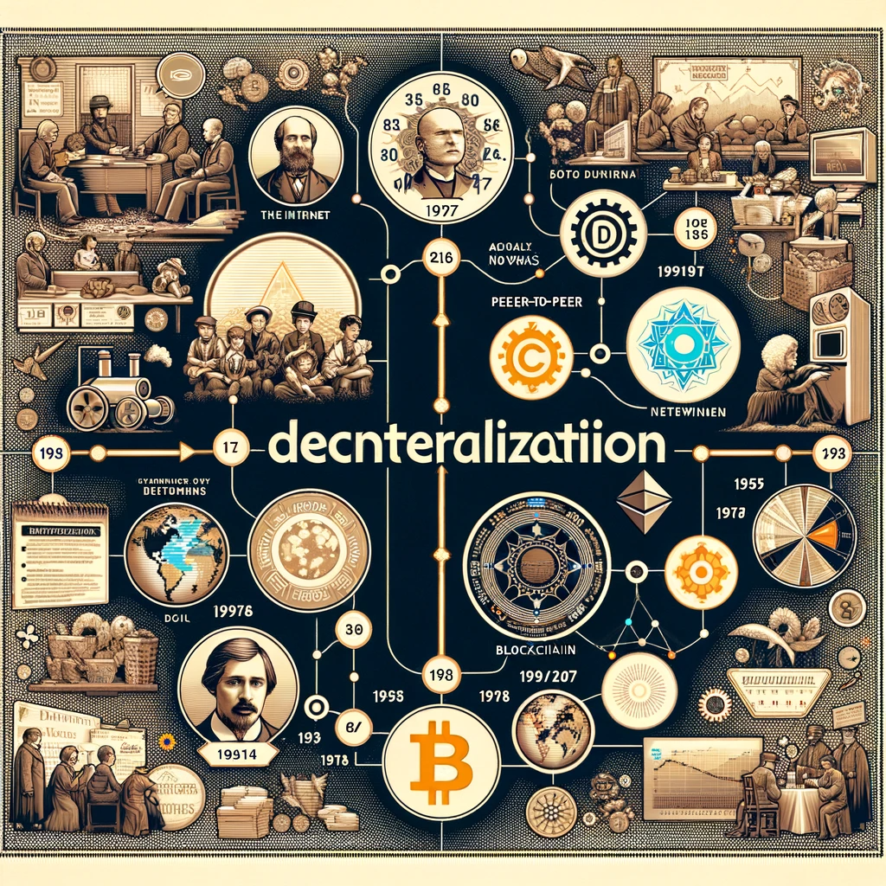
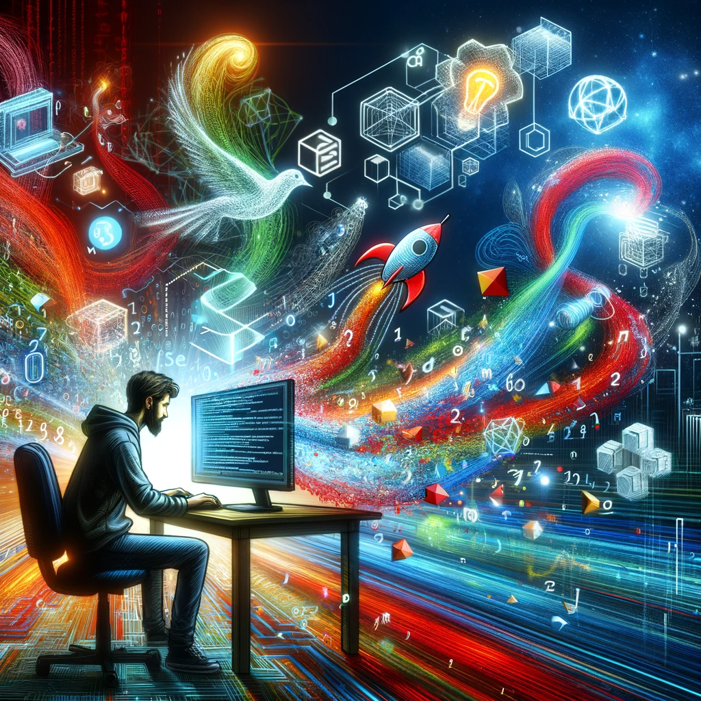

How to Defeat the Digital Dictator 🔗🌐
Ever felt like the digital world is a bit too... bossy? Welcome to Centralization City, where a few big wigs hold the reins, and the rest of us follow the script. Think of it like a giant tech party where only a few VIPs decide the playlist.
Centralization's Oopsies:
- "Oops, All Your Data Belongs to Us!": Remember that time a big social network 'accidentally' shared your data? Yeah, that's centralization's blooper reel.
- "Single Point of Oops": When all your digital eggs are in one basket, and that basket gets dropped (think major service outages), it's lights out for everyone.
- "Innovation? What Innovation?": With just a few players calling the shots, new ideas are as rare as a unicorn riding a skateboard.
Enter the World of Decentralization:
Decentralization is like turning the internet into a big, democratic potluck where everyone brings their own dish. No more tech tyrants hogging the buffet!
- Privacy Parade: Your secrets are now locked in a digital vault with a thousand keys, instead of one.
- Resilience Rave: With data and control spread out, it's like having a bunch of mini-internets. One goes down, the others keep partying.
- Innovation Carnival: Ideas flow like a never-ending meme stream, because everyone gets to contribute to the mix.
So, let's break free from the clutches of Centralization City, and dive into the diverse, dynamic world of Decentralization! It's time to make the digital realm a fair, fun, and free-for-all fiesta! 🎉🌍
A Brief History of Decentralization: The Digital Revolution 🌐📜
Imagine the digital world as a kingdom. In the beginning Tim Berners-Lee created a primordial continent 🗻 (the World Wide Web) like a creator god. Then came businessmen (Netscape, Oracle, Google, Yahoo, Microsoft) who together built a huge kingdom. There was a lot of competition within the kingdom and eventually companies like Google, Meta, Amazon, etc. took control🗿 of every aspect of the kingdom. Unfortunately users are not only citizens of the kingdom, but also minerals or commodities. The kingdom's profitability depended on user consumption, and the way to increase that consumption was to snoop on the user's privacy and force them to watch advertisements or spend money 😭.

20 years later, Tim Berners-Lee🗽, the god of creation, was
so frustrated by the misuse of his invention of the World Wide Web
that he outlined the design problems of the World Wide Web in a
draft for the World Wide Web Consortium, which led to the creation
of the Solid project. From there, the ideas of distributed networks
and decentralization began to make their way into history, and at
the beginning of the 21st century, rebels such as Napster and
BitTorrent broke the mold with peer-to-peer sharing, and in 2008,
the enigmatic Satoshi Nakamoto unveiled Bitcoin 💰, which
kicked off a blockchain revolution. . It was not just a new
technology, it was a transfer of power from the few to the many!
Principles of Decentralization: Power to the People 🌎⚡
"Decentralization's mantra: Spread the power, like a Wikipedia of the digital realm 📝. It's about diverse voices, like an open-source symphony à la Linux. Each participant contributes a unique melody, creating a harmonious blend of ideas and innovation.
And when it comes to resilience? Think of the internet itself, a spider's web of connections, where each node acts as a fortress against failure. This network resembles a complex graph in mathematics 📐, where nodes (vertices) are connected by edges, illustrating the robustness of decentralized systems.
Diving deeper into the principles of decentralization, we draw parallels with computer science concepts like distributed computing 💻. It's a symphony of collaboration, where each part of the system works independently yet contributes to the whole, much like functions in a program working together to solve complex problems.
Moreover, decentralization echoes the ethos of open-source development, where the source code is accessible to all 💻👨💻. This collective intelligence and shared progress are the pillars of a decentralized framework.
Additionally, decentralized systems often employ cryptographic algorithms 🔒, which are central to maintaining security and trust. Think of encryption methods like public-key cryptography (used in blockchain technology), which ensures secure, transparent transactions without the need for a central authority.
Finally, the principle of consensus algorithms in decentralized systems, like Proof of Work or Proof of Stake used in blockchain, parallels decision-making processes in distributed systems ⚡. These algorithms are like the rules of engagement, ensuring that all participants in the network agree on the validity of transactions, thereby maintaining integrity and trust.
In essence, decentralization is more than a technological construct; it's a philosophy that champions autonomy, collaboration, and innovation, paving the way for a more inclusive and resilient digital future 🌀🌟."
Decentralization in Cryptocurrency and Social Media: Every Voice and Thought is valuable 💰📢
Times are changing, far more than we ever imagined. Paper money with Franklin on it and the social empire built by Zuckerberg 👁 seem to be disappearing together. The world is becoming more and more anti-hegemonic and anti-monopolistic. Bitcoin 💵 - the currency of digital mavericks - is rewriting the rules of finance. No more banks calling the shots; it's a transparent, secure ledger where everyone is a banker. What about Ether? It's not just cryptocurrency, it's a complete ecosystem of decentralized 💻 apps - a true digital frontier! Same goes for social media platforms. Distributed servers are building a coalition of independent nations united in a coalition of free speech. There are no data monopolies, no censorship, just pure, unfiltered digital conversation. This is the social media utopia we've been waiting for!